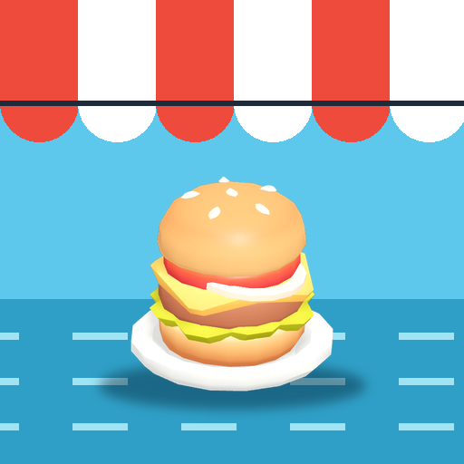

<- all projects

Harbor Lunch
PC
Volume
Live
Plan the lunch at dawn, run the grill at noon and feed the whole harbor.
Grandpa Teo has fed the dockworkers of Pier 9 for 50 years. Now his back is out, a glossy food hall is opening next door, and he hands you his apron. You have one fishing season to prove the old stall belongs. Each service starts with the crowd board and today's catch: pick the menu, buy just enough supplies, then move orders through Prep, Grill and Counter and send help to the slow station. Learn 10 dishes, win over the regulars across 6 chapters and grow the harbor petition all the way to the festival cook-off.